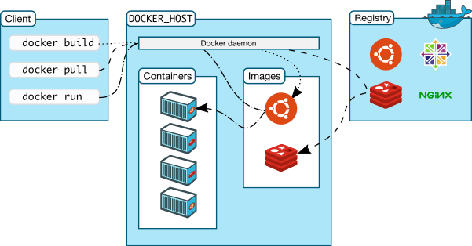
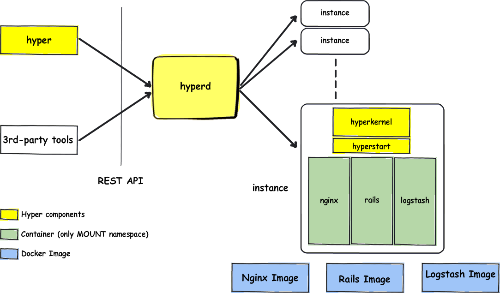

Un point sur Docker et la sécurité
08/10/2015
Au programme
- Qu'est ce que je fous là ?
- C'est quoi Docker ?
- Comment ca marche
- Isolation des containers
- Distribution et signature des images
- Et pour le futur ?
Qu'est ce que je fous là ?

C'est quoi Docker ?
Un croisement entre chroot et une VM


Pourquoi faire ?
- Environnements reproductibles jetables
- Facilité de déploiement et de passage à l'échelle
- Rollback aisé en cas de problème
Comment ca marche ?
Comment ca marche ?
S'appuie sur des fonctionnalités du noyau Linux :
- cgroups : gestion des ressources
- namespaces : isolation
- capabilities : gestion fine des permissions
Vulnérabilité ReadTheDocs.org
Sphinx
↓
Système de build interne
↓
Les Internets

Vulnérabilité ReadTheDocs.org
- Exécution de code arbitraire
- Processus de build commun entre les utilisateurs
Isoler le processus de build
Une construction =
un container immutable + un container de data (noexec)
Hardening
Du bon sens !
Hardening
- Exécuter du code en lequel vous avez confiance
- Rien ne tourne en root !
- Utiliser SELinux/AppArmor pour attribuer des contextes adaptés
- Noyau durci : PaX et grsec
- Réduire la liste des syscall disponibles (seccomp)
Hardening de services systèmes
- Limiter l'accès aux devices (cgroups)
-
Gestion fine des permissions superutilisateur (capabilities)
- CAP_NET_RAW
- CAP_SYS_ADMIN
- …
Docker bonnes pratiques
2 bonnes références d'introduction et plus :
- White Paper Intro to Container Security
- CIS Docker 1.6 Benchmark
Défense en profondeur
Une solution hybride : des containers dans une VM


Distribution des images
Le passé (Registry v1)
- ID des layers arbitraire
- Pas de vérification d'intégrité

Distribution des images
Actuellement (Registry v2)
- ID calculé depuis le contenu du layer
- Manisfest des images signé
Distribution des images
Notary
Objectif : rendre curl http://exemple.com/script.sh | sh sûr
- Miroirs et transport peuvent être non sûrs
- Survit à la compromission d'une clé
- Choix des seuils de confiance
En résumé
- Un service = un container
- Réduire le plus possible les possibilités au sein de chaque container
- Penser à la distribution
Y'a quoi dans le futur ?
- CaaS
- Format de container and container runtime universel : Open Container Initiative
- Standards ouvert poussés par les acteurs majeurs
- …
Questions ?